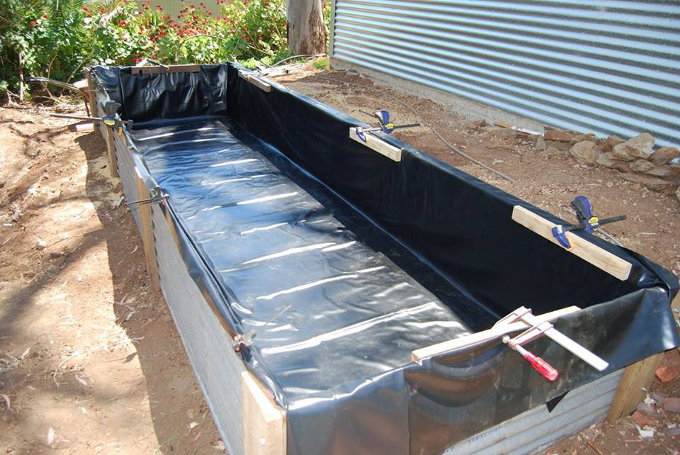
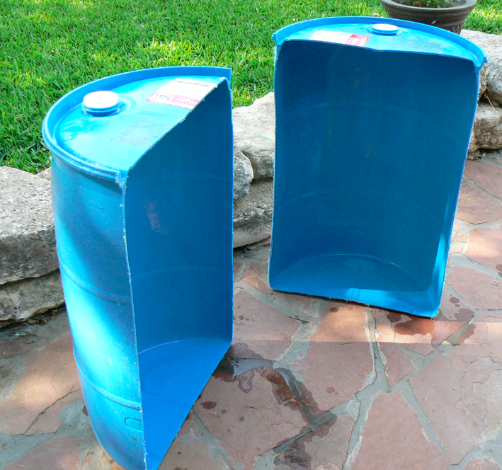
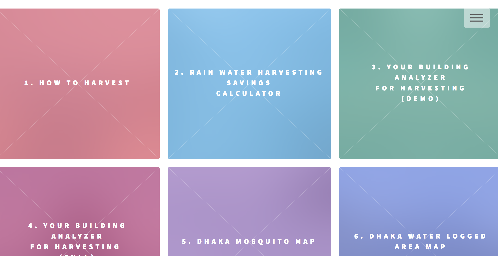
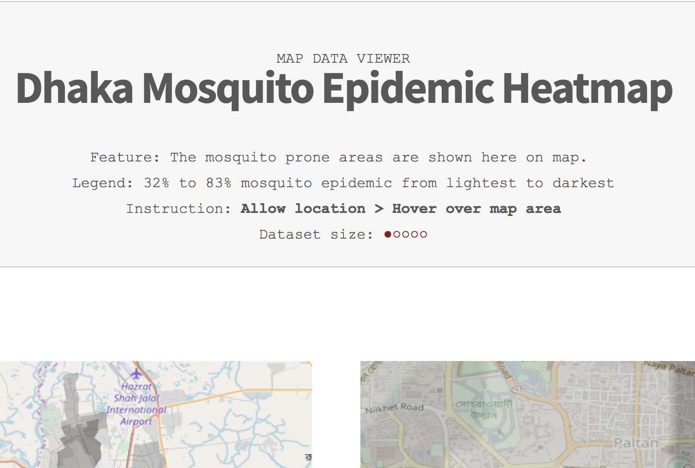
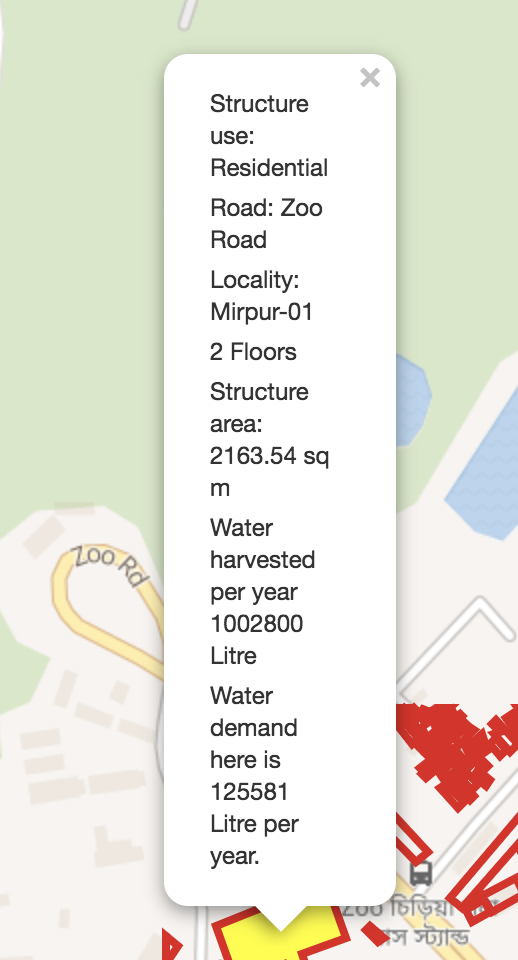
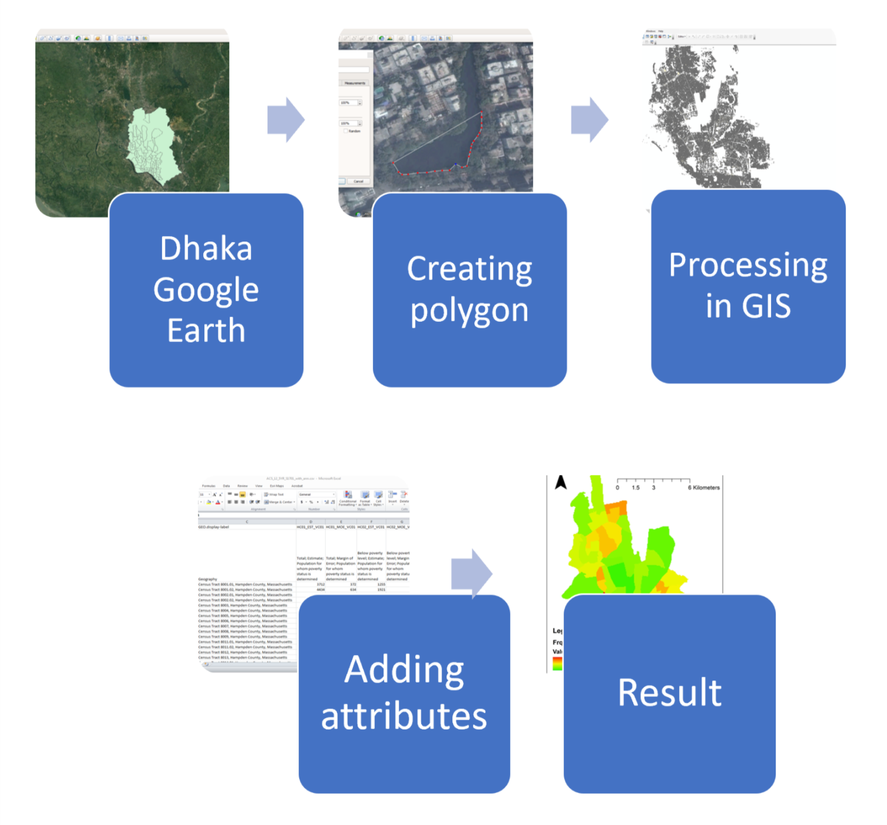
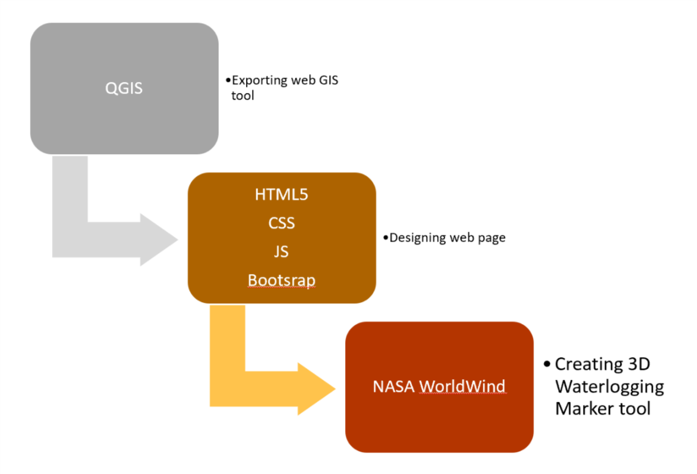

What is Less Difficult Dhaka?
|
Less Difficult
Dhaka is a Web App which is intended to solve
three major water related issues in Dhaka, the capital
of Bangladesh. Road water-logging, clean water crisis
and mosquito epidemic has made the city life
challenging.
|
What is Rain Water Harvesting
|
Rainwater harvesting is the accumulation and storage of rainwater for reuse on-site, rather than allowing it to run off. Rainwater can be collected from rivers or roofs, and in many places, the water collected is redirected to a deep pit (well, shaft, or borehole), a reservoir with percolation, or collected from dew or fog with nets or other tools. Its uses include water for gardens, livestock, irrigation, domestic use with proper treatment, indoor heating for houses, etc. The harvested water can also be used as drinking water, longer-term storage, and for other purposes such as groundwater recharge. Rainwater harvesting is one of the simplest and oldest methods of self-supply of water for households usually financed by the user. Do it yourself“It’s not that some people have the willpower and some don’t. It’s that some people are ready to change and others are not.” There are complicated methods but it is also as easy as making one of this box. Or see this low-tech method of putting 10 drum sections on your roof. |

UN World Challenge 2018
| This project has been developed as a submission for the challange. It was inspired by a research word we conducted at Bangladesh University of Engineering and Technology (BUET) on rain water harvesing feasibility in Bangladesh. |
How to Start
|
1. Go to tha App lessdifficultdhaka.com/app 2. Click on one of the tools  3. Understand the tool purpose  4. Click on your building to get data  |
Workflow
| 1. GIS Data
Collection  2. Web app development  |